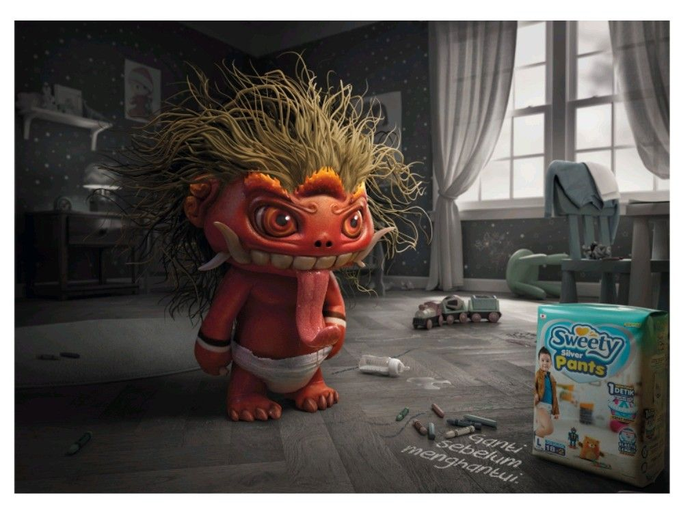

Little Monster
When an everyday parenting problem meets a very Indonesian ghost story.
A playful folklore-inspired campaign that turns diaper-change reminders into something a little more unforgettable.

A belief hiding in plain sight
In many Indonesian homes, an unusually fussy baby can inspire theories that go well beyond the practical. Folk stories about unseen creatures are familiar cultural shorthand. We saw an opportunity to borrow that language, then reveal a far more ordinary culprit: discomfort from a diaper that needs changing.
Let the monsters do the talking
The creative idea treats those imagined creatures as an entertaining misdirection. The tone borrows from horror, but the purpose is rooted in a real parenting routine. It creates room for comedy, a memorable reveal, and a product message that doesn't have to shout.
A line that completes the joke
I helped shape the concept and wrote #GantiSebelumMenghantui, or “Change it before it comes back to haunt you.” The Indonesian wording connects the act of changing a diaper with the language of ghost stories. That wordplay is what makes the campaign feel local rather than simply translated.
See the work.
Original campaign imagery and films from Dan Pradana's archive, hosted in this repository.

Creative credits.
Campaign credits independently verified from published industry records.
Published campaign credits ↗